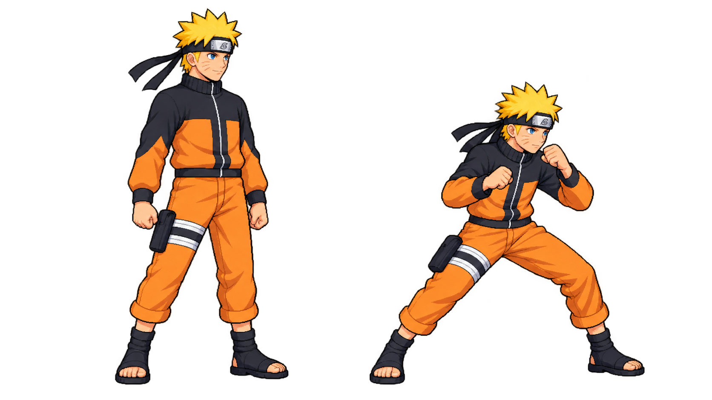
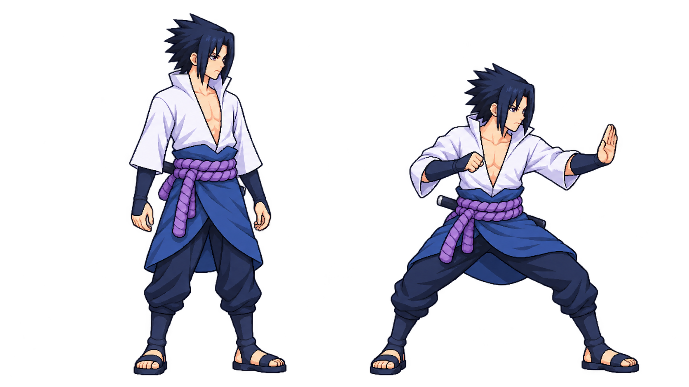
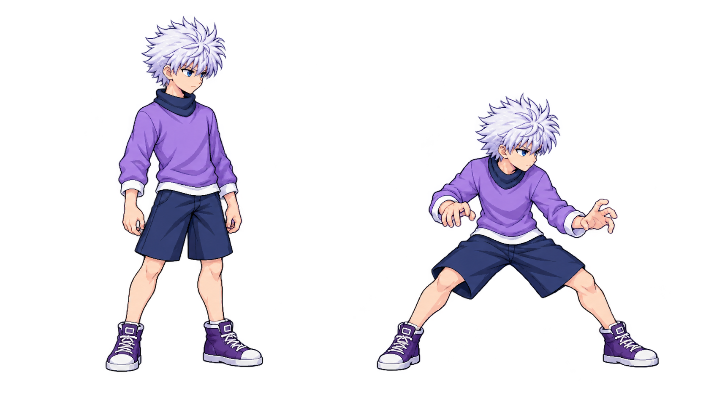
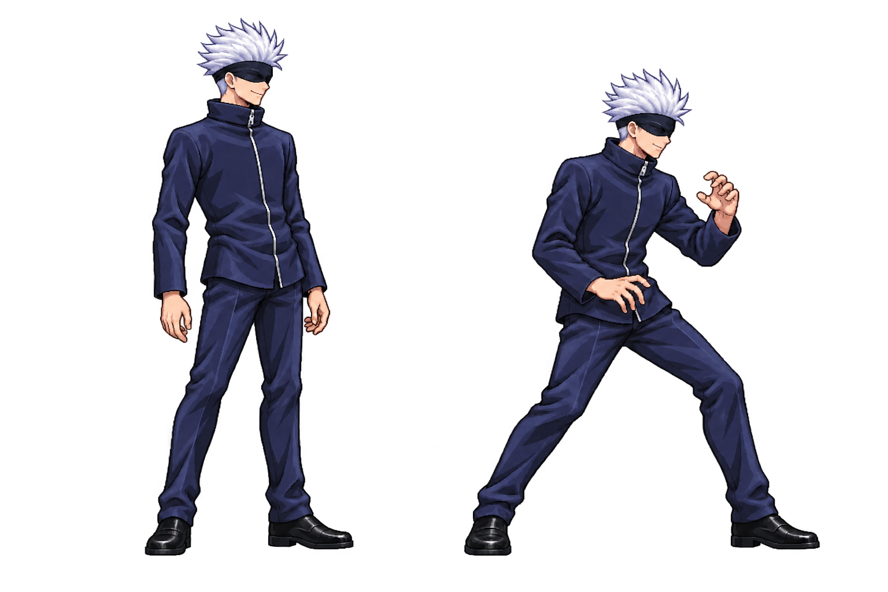
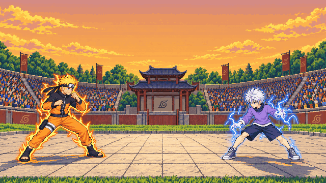

Naruto
The title’s face, compact spikes and orange-and-black outfit.

Open full-size draftNaruto and Killua follow the title art you chose. Sasuke and Gojo use the same clean anime shading and readable shapes, with their original designs.
Review the look and relative size first. This is a draft, with no animation set or live-game changes.
Killua is visibly shorter and narrower; Naruto and Sasuke have similar teenage builds; Gojo is the tall, lean adult. Each fighting stance keeps its standing view’s scale.
The title’s face, compact spikes and orange-and-black outfit.

Open full-size draftOriginal design, a comparable teen build, and the title’s clean finish.

Open full-size draftThe title’s youthful face, lavender shirt and low assassin stance.

Open full-size draftOriginal lean silhouette and blindfold, with clear adult height.

Open full-size draftThe original title-screen image, kept here for direct comparison.

Standing silhouette heights, including hair: Naruto 205px, Sasuke 209px, Killua 186px, Gojo 236px. Killua is intentionally about 10% shorter than Naruto in this visual draft; this is a proposal for your review, not an exact canon-height claim. Hair and stance are evaluated separately. Crown landmarks carry roughly ±3px uncertainty after scaling.
The sheets show two concept poses each. They are not packed animation strips or an animation-gate pass. The next production checkpoint, only after your approval, is an idle/guard trial in the real game at equal depth.